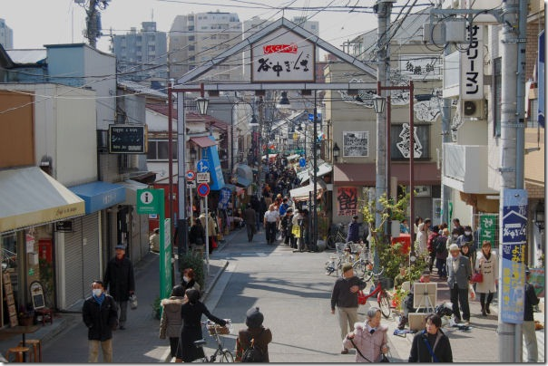
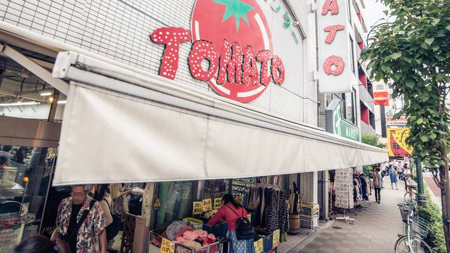
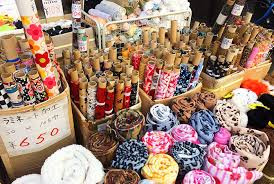
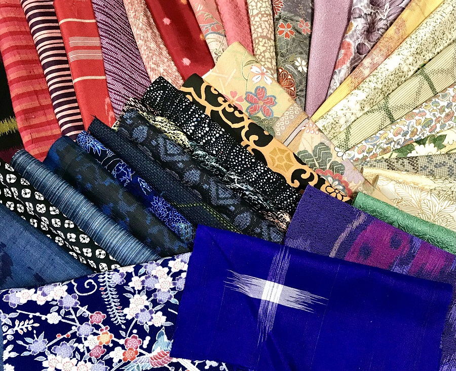
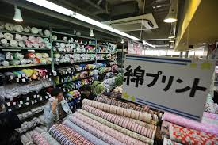

History of Nippori Textile Town
Nippori Fabric Town, or Nippori Sen'i Gai, is a vibrant street about a kilometer long, nestled in Tokyo's
Arakawa Ward. Its history dates back to the early Taisho era (1910s) when companies dealing with rags
and textile clippings moved to the area. Over the years, it evolved into a bustling wholesale district,
attracting dealers from all over the country. Following the Great Kanto Earthquake in 1923 and the Great
Fire of Nippori in 1963, the area was redeveloped, and more retail shops began to appear, solidifying
its reputation as a textile hub. Today, it is home to nearly 90 shops catering to everyone from
hobbyists and designers to students and professionals.
The transformation of Nippori from a post-war reconstruction zone to Japan's premier textile destination is a testament to the resilience and creativity of its merchants. Many of the original families who established shops in the 1950s continue to operate their businesses today, passing down generations of expertise in fabric selection and textile knowledge. The district has weathered economic downturns, changing fashion trends, and the rise of fast fashion, yet it remains an essential pilgrimage site for anyone serious about textiles in Japan.
Historic Nippori Street
A glimpse of the bustling main street where textile dreams come to life:

The Fabrics
The district is a treasure trove of textiles, offering an incredible variety of materials at affordable
prices. You can find everything from traditional Japanese kimono silks and indigo-dyed cotton to modern
fabrics, wool, denim, and lace. Many shops specialize in specific types of materials or notions like
buttons, zippers, and sewing patterns. The town's most famous store, Tomato, is a multi-floor building
with a massive selection, while other smaller shops offer unique, curated collections. The diverse range
of products makes Nippori a must-visit for anyone passionate about fashion and handicrafts.
What sets Nippori apart from other textile districts worldwide is its incredible diversity and accessibility. Unlike wholesale-only districts, Nippori welcomes everyone from professional designers working on haute couture pieces to weekend hobbyists creating their first quilts. The shops stock everything from luxury Italian wools and French laces to traditional Japanese cottons and innovative synthetic blends. Many fabrics are sold by the meter at prices that would be impossible to find elsewhere, making high-quality materials accessible to creators of all budgets.
Famous Shops and Landmarks
Tomato, the district's flagship store, spans multiple floors and houses thousands of fabric varieties under one roof. Each floor specializes in different categories - from basic cottons on the ground floor to luxury silks and imported materials on the upper levels. The store has become so iconic that many visitors use it as a landmark when navigating the district.
Other notable establishments include Yamato, known for its extensive collection of traditional Japanese fabrics and yukata materials, and Okadaya, which specializes in high-end fashion fabrics imported from Europe. Many smaller, family-run shops offer unique specialties - some focus exclusively on buttons and notions, others on vintage kimono fabrics, and still others on modern performance textiles for athletic wear.
Inside Tomato Store
The famous multi-floor Tomato store, a textile wonderland:

A Glimpse of the Colors
Here is an image to help you visualize the richness of the fabrics found in the district:

Traditional Japanese Textiles
Nippori serves as a guardian of traditional Japanese textile arts. The district houses some of the finest collections of kimono silks, indigo-dyed cottons, and hand-woven fabrics in the country. Master craftsmen still practice ancient dyeing techniques like shibori (tie-dye), katazome (stencil dyeing), and yuzen (painted silk). These time-honored methods create fabrics with unique patterns and textures that cannot be replicated by modern machinery.
Many shops in Nippori also specialize in obi fabrics - the elaborate sashes worn with kimono. These textiles often feature intricate brocade patterns, metallic threads, and complex weaving techniques that represent the pinnacle of Japanese textile artistry. For those interested in traditional crafts, several shops offer classes in traditional dyeing and weaving techniques, helping to preserve these cultural treasures for future generations.
Traditional Kimono Silks
Exquisite traditional Japanese silk fabrics with intricate patterns:

Modern Innovation and Technology
While deeply rooted in tradition, Nippori has also embraced modern textile innovations. Many shops now carry high-tech performance fabrics, eco-friendly materials made from recycled fibers, and cutting-edge synthetic blends. Smart textiles with embedded electronics, antibacterial treatments, and moisture-wicking properties are becoming increasingly popular among both professional designers and home sewers.
The district has also adapted to the digital age, with many shops now offering online catalogs and shipping services. Some forward-thinking retailers have introduced virtual fabric sampling, allowing customers to see how different materials look under various lighting conditions. Despite these technological advances, the personal touch and expert knowledge of the shop owners remain Nippori's greatest assets.
Visitor's Guide and Tips
The best time to visit Nippori is on weekday mornings when the shops are less crowded and you can receive more personalized attention from the staff. Most shops open around 9:30 AM and close by 6:00 PM, with some closing on Sundays or Mondays. Bringing a small pair of scissors and a measuring tape can be helpful, as many shops appreciate customers who come prepared.
Don't be afraid to ask questions - the shop owners and staff are incredibly knowledgeable and often speak some English. Many are happy to share stories about their fabrics' origins, suggest complementary materials, or offer advice on care and handling. Cash is still preferred in many shops, though larger stores now accept credit cards. Remember to factor in time for browsing - it's easy to spend an entire day exploring the district's treasures.
Fabric Shopping Experience
Customers browsing through the endless varieties of textiles:

Cultural Impact and Community
Nippori Textile Town has played a crucial role in shaping Japan's fashion industry and creative culture. Many of the country's most celebrated designers, from avant-garde artists to traditional craftspeople, have sourced materials from these shops. The district has fostered a community of makers, bringing together professional designers, costume makers, quilters, and hobbyists in a shared appreciation for quality textiles.
The area regularly hosts textile festivals, workshops, and exhibitions that celebrate both traditional and contemporary fabric arts. These events provide opportunities for cultural exchange and learning, attracting visitors from around the world who come to study Japanese textile techniques and traditions. The community spirit in Nippori is palpable - shop owners often collaborate, referring customers to competitors when they don't have exactly what someone needs.
Map of Nippori Textile Town
Locate the bustling fabric district on the map below. It is conveniently located near JR Nippori Station.